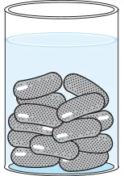
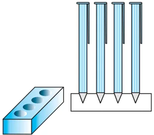

Unless stated otherwise, take \(\pi = \frac{22}{7}\) . 1.1.1.1.1. A solid is in the shape of a cone standing on a hemisphere with both their radii being equal to 1 cm and the height of the cone is equal to its radius. Find the volume of the solid in terms of \(\pi\) .
- 2.Rachel, an engineering student, was asked to make a model shaped like a cylinder with
two cones attached at its two ends by using a thin aluminium sheet. The diameter of the model is 3 cm and its length is 12 cm. If each cone has a height of 2 cm, find the volume of air contained in the model that Rachel made. (Assume the outer and inner dimensions of the model to be nearly the same.)
- 3.A gulab jamun, contains sugar syrup up to about

30% of its volume. Find approximately how much syrup would be found in 45 gulab jamuns, each shaped like a cylinder with two hemispherical ends with length 5 cm and diameter 2.8 cm (see Fig. 12.15).
- 4.A pen stand made of wood is in the shape of a Fig. 12.15
cuboid with four conical depressions to hold pens. The dimensions of the cuboid are 15 cm by 10 cm by 3.5 cm. The radius of each of the depressions is 0.5 cm and the depth is 1.4 cm. Find the volume of wood in the entire stand (see Fig. 12.16).

- 5.A vessel is in the form of an inverted cone. Its
height is 8 cm and the radius of its top, which is open, is 5 cm. It is filled with water up to the brim. When lead shots, each of which is a sphere of radius 0.5 cm are dropped into the vessel, one-fourth of the water flows out. Find the number of lead shots dropped in the vessel. Fig. 12.16
- 6.A solid iron pole consists of a cylinder of height 220 cm and base diameter 24 cm, which
is surmounted by another cylinder of height 60 cm and radius 8 cm. Find the mass of the pole, given that \(1 cm^{3}\) of iron has approximately 8g mass. (Use \(\pi = 3.14)\)
- 7.A solid consisting of a right circular cone of height 120 cm and radius 60 cm standing on
a hemisphere of radius 60 cm is placed upright in a right circular cylinder full of water such that it touches the bottom. Find the volume of water left in the cylinder, if the radius of the cylinder is 60 cm and its height is 180 cm.
- 8.A spherical glass vessel has a cylindrical neck 8 cm long, 2 cm in diameter; the diameter